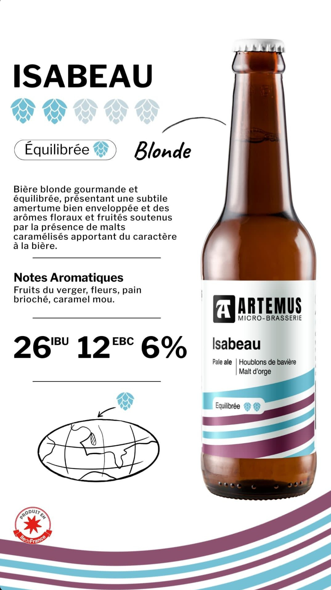
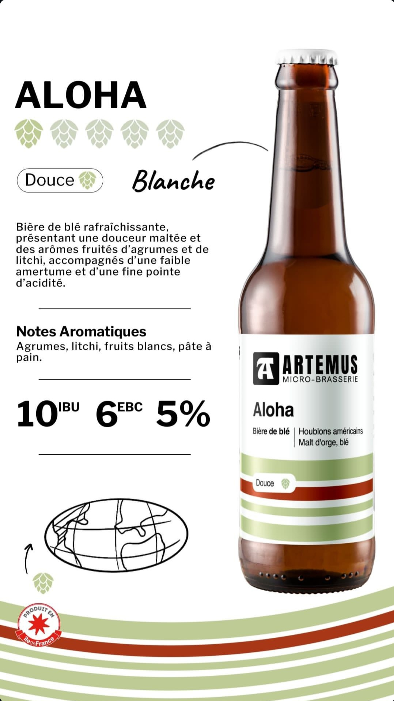
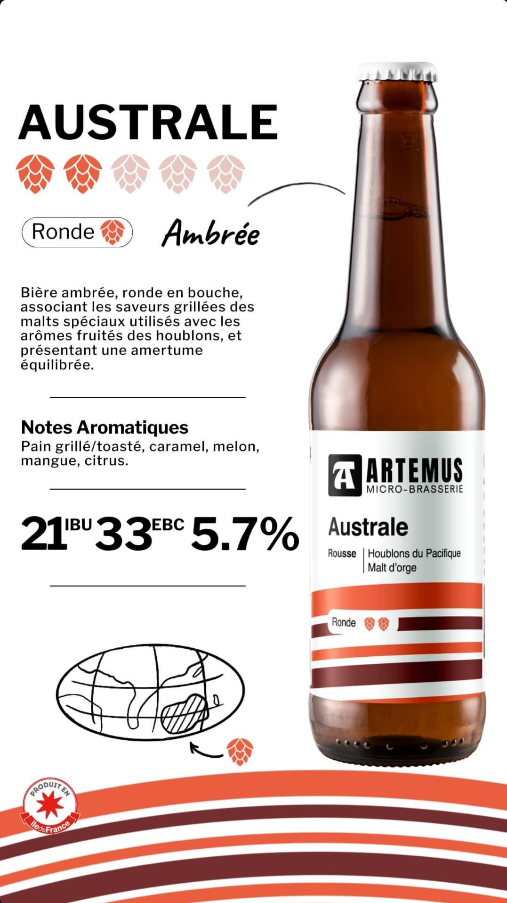
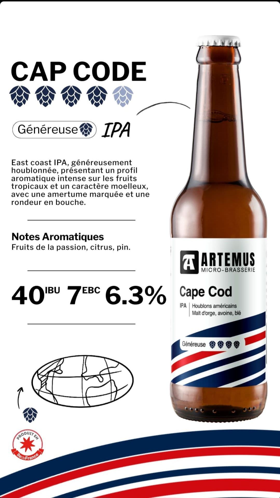
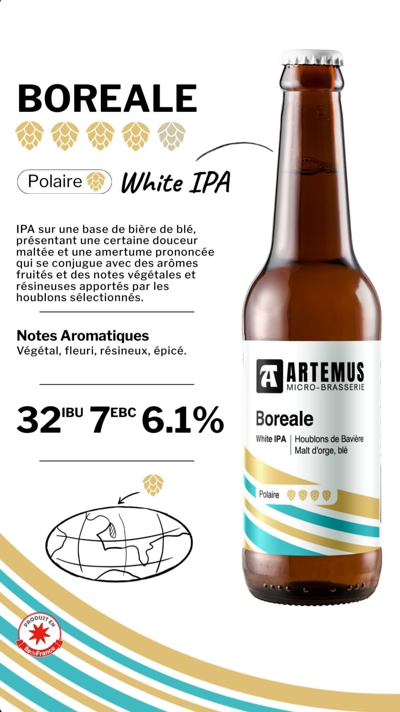
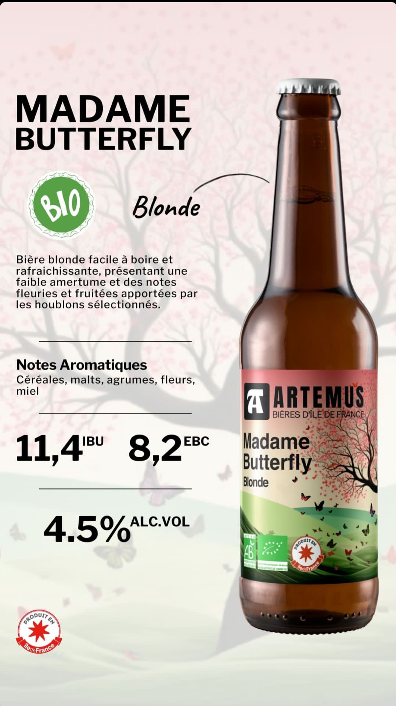
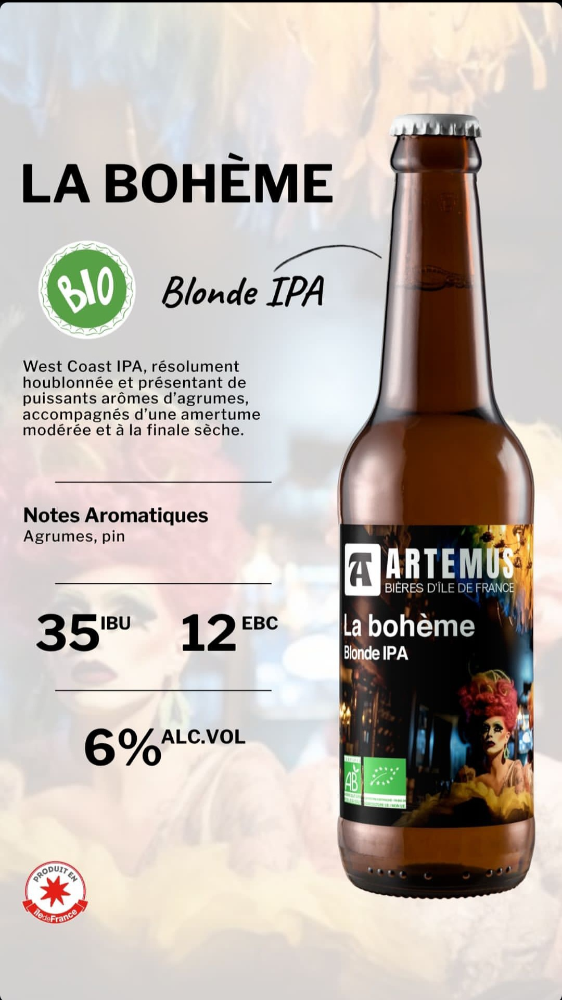
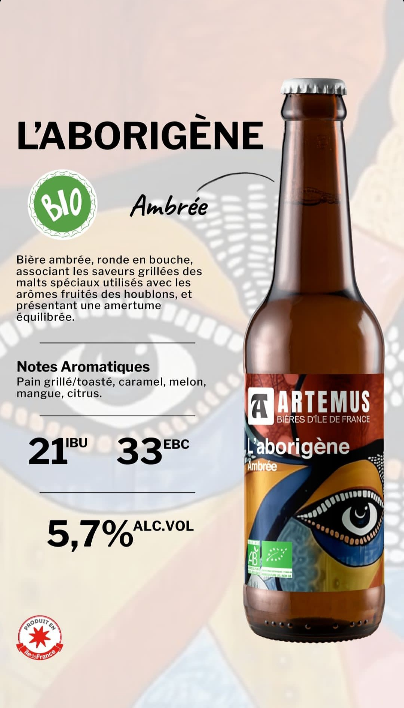

Notre Gamme
Des Bières d'Exception
Découvrez notre ligne « Voyage Aromatique » qui vous invite à explorer le patrimoine brassicole de 6 régions du monde, ainsi que nos bières éphémères réservées aux épiceries fines et cavistes.
Chaque bière Artemus est brassée avec des céréales d'Île-de-France, labellisé « Produit en Île-de-France », pour une expérience authentique et locale.

Isabeau
Voyage Aromatique - Bavière
Hommage au savoir-faire bavarois, une blonde dorée aux notes légères de malt et de houblon.

Petite Mademoiselle
Voyage Aromatique - Alsace
Inspirée des saveurs d'Alsace, une blanche rafraîchissante aux notes d'agrumes et d'épices douces.

Aloha
Voyage Aromatique - Tropiques
Aux notes exotiques, une blonde fruitée qui vous transporte vers des horizons lointains.

Australe
Voyage Aromatique - Australie
Une pale ale aux notes résineuses et d'agrumes, inspirée des houblons australiens.

Capecod IPA
Voyage Aromatique - USA
Une IPA américaine classique aux notes d'agrumes et de pin, puissante et équilibrée.

Boréale White IPA
Voyage Aromatique - Nord
Une White IPA aux notes d'agrumes et d'épices, fusion entre blanche et IPA.

Butterfly
Bière Éphémère - Pale Ale
Pale ale au houblon Sorachi Ace, aux notes uniques de citron et de dill.

La Bohème
Bière Éphémère - Stout
Stout aux notes de café et chocolat, une expérience riche et onctueuse.

L'Origine
Bière Éphémère - Amber Ale
Amber Ale aux notes de caramel et pain grillé, hommage aux origines de la brasserie.
Notre Processus
Brassées avec Passion
Chaque bière Artemus suit un processus rigoureux pour garantir qualité et authenticité.
Sélection des Ingrédients
Malt, houblon et levures choisis avec soin parmi les meilleurs producteurs.
Maltage et Concassage
Préparation méticuleuse des grains pour extraire les sucres fermentescibles.
Empâtage et Filtration
Création du moût et séparation des drêches pour une clarté parfaite.
Ébullition et Houblonnage
Stérilisation et aromatisation avec différents houblons selon la recette.
Fermentation et Affinage
Transformation des sucres en alcool et maturation pour développer les arômes.
Trouvez Votre Bière Préférée
Visitez notre brasserie pour une dégustation guidée ou contactez-nous pour trouver les points de vente près de chez vous.